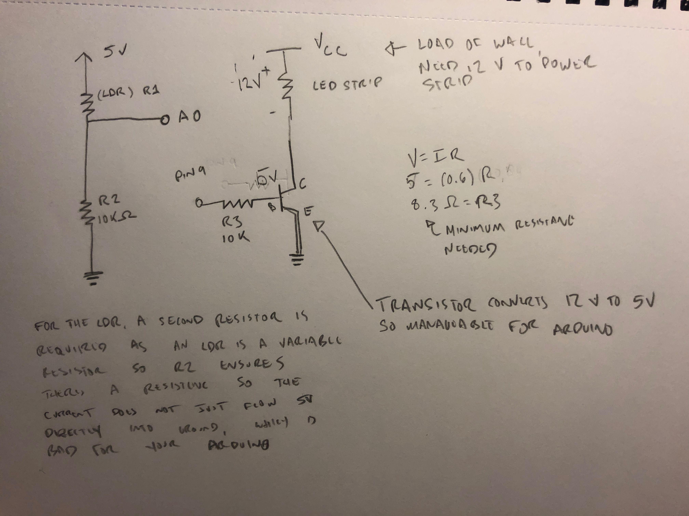
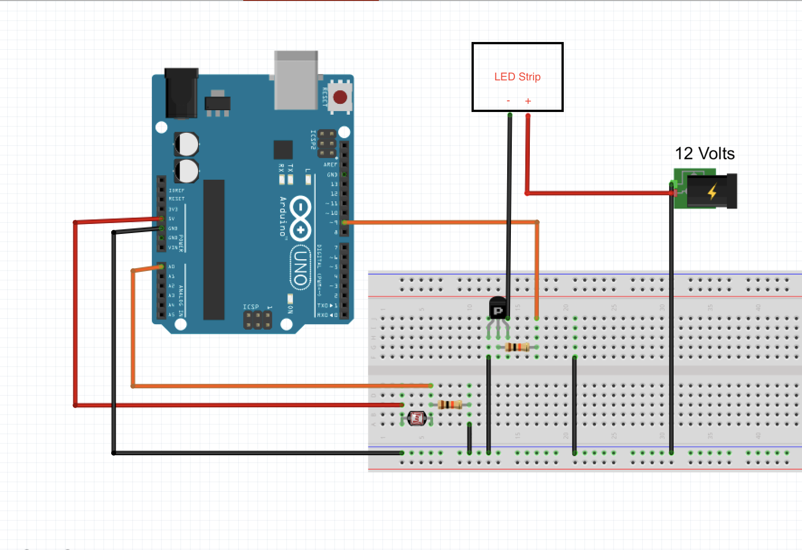
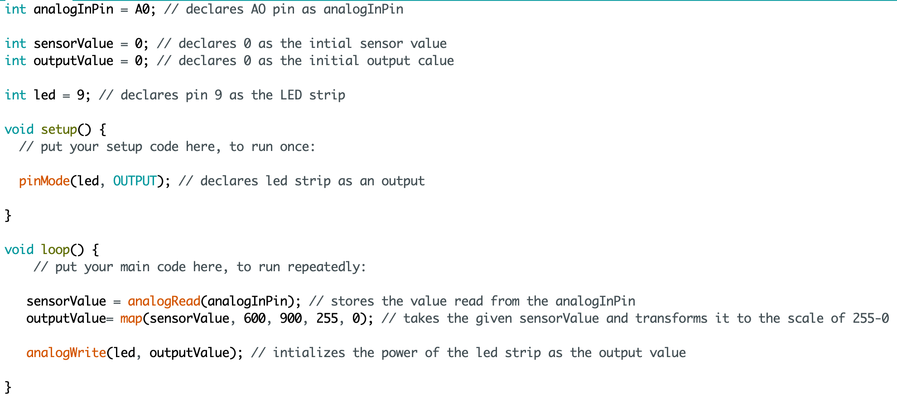

Monina's Assignment 4!
A 10k resistor is used for the LDR because a second resistor is needed as an LDR is a variable resistor. If there was no resistor, when the LDR has 0 resistance, 5V will flow directly to ground and damage the Arduino.

An image of the circuit. In Fritzing, I could not find the LED strip or 12 volt power supply so I just put in labels and image placeholders.

A gif of the circuits operation.

The code snippet.